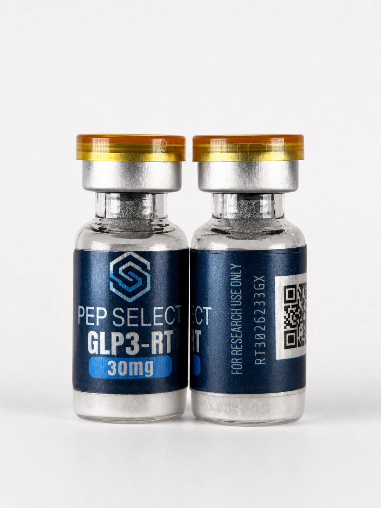

Identity
- Method
- LC-MS
- Status
- Pass
This report covers a past batch. The product page shows current availability.
Certificate of Analysis

Batch RT2026205JP was shipped in packaging labeled 20 mg. Independent testing returned net content of 11.51 mg, identity confirmed as retatrutide, purity 99.63%. The supplier confirmed these are their 10 mg vials in incorrectly labeled boxes. We list and price this batch as 10 mg, matching the verified content.
| Test | Laboratory evidence | Status |
|---|---|---|
| Identity |
| Pass |
| Purity |
| Pass |
| Measured content |
| Reported |
| Heavy metals |
| Pass |
| Sterility |
| Pass |
| Endotoxins |
| Pass |
| Fentanyl screening |
| Pass |
Original document
Expand to view pages
Source documentation
Original analysis from the independent laboratory.